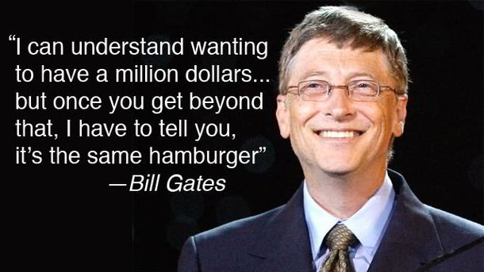

Bill Gates
Arguably one of the most popular computer programmers of all time, Bill Gates is an American business magnate, computer programmer, PC pioneer, investor, and philanthropist. He is the co-founder, ex-executive officer and current chairman of Microsoft, which is the world’s largest personal-computer software company. He is the best-known entrepreneurs of the personal computer revolution and helped develop Windows, which is the most used operating system in the world.
For the first 5 years at Microsoft, aside from handling the business side of the company, Gates also personally oversaw every single code that the company sent out, often fixing ones he deemed incorrect or buggy. Aside from his programming skills, he is widely praised for his generosity and keen investment planning, but is highly criticized due to his anti-competitive business tactics.